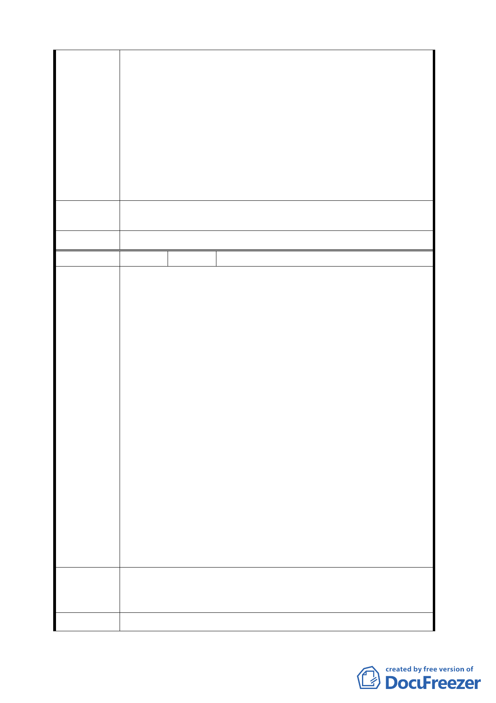

明顯有本末倒置之虞，原因有三：
1、大內科地區交通問題，乃該區都市計畫無止盡開放之後
果，怎可只為了大內科之繁榮，犧牲其他地區應有之都
市發展。
2、交通問題本應該以交通建設來解決，不能以其他非交通
手段處理，況且復興北路連通大直橋地下道、捷運已經
通車在即，該建設就是用來改善大內科之交通問題。
3、若倉促地實施調降該區域的容積移入上限，立即顯現的
將是降低該區地主的利益及開發意願，進而影響整體開
發時程，對於居民及整體經濟都是負面的。
建議辦法
為確保長期都市良好發展，以上陳情期望都市計畫委員會慎
重考量。
委員會決議 同編號 1。
編 號 3 陳情人 楊木得等 8 人
一、本區近年來之發展已有明顯的成果，除了本區為台北市
未來指日可待的繁榮區段外，容積可移入已成開發商提
高開發意願及解決大稻埕地區歷史建物修復的一項德政
措施，此措施不宜因短期的交通問題影響未來長期的都
市繁榮發展策略。
二、該區舉凡地主及開發商已將容積移入列為開發分析中一
項重要的評估指標，整體的土地價值也隨著容積可移入
而水漲船高，以目前而言正處於公告現值與銷售價格的
平衡點，若貿然減半容積移入上限，勢必增加開發商成
陳情理由
本，進而影響整體都市發展。
三、大內科內之容積接收區，該細部計畫規劃為低密度之都
市計畫地區，先天上擁有容積移入的優勢條件，舉凡建
蔽率或容積率甚至移入原法定容積之 40％的總容積量都
遠比台北市其他行政區來的低許多，單方面以大內科的
交通問題來限制該區的發展實為不智之舉。
四、目前該區的開發商無論已購或是待整合的土地，其成本
考量乃是以現有法令評估，更多開發商的投入對於該區
無疑是莫大的助力，對於台北市甚至是全台灣而言都是
經濟發展不可或缺的一環，期待都市計畫的擬定能全面
性更周延的考量。
有關大內科內之容積接收區基地可接受容積量由最高不得超
建 議 辦 法 過原法定容積之 40％，調降為 20％其影響層面重大，請暫緩
實施。
委員會決議 同編號 1。
四